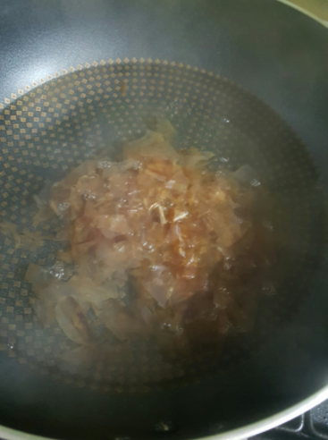
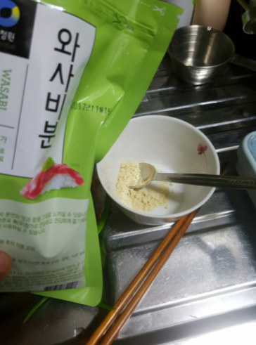
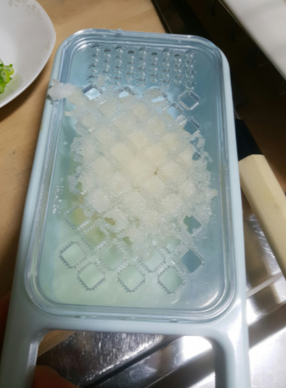

Japanese Food


재료 리스트
메밀면 3인분 | 김밥용 김 1장 | 와사비(고추냉이)가루 1큰술 | 무(5x5x5) 1개
메밀소바 양념장(가쓰오부시 한줌 | 다시마 1장 | 간장 9큰술 | 설탕 3큰술 | 맛술 2큰술 | 청주 3큰술)
레시피
1. 먼저 물 3컵에 다시마을 넣어 끓여주세요.
물이 끓어오르면 다시마를 빼고 가쓰오부시 한줌을 넣고 10분가량 우려주세요.
 
2. 와사비가루 1큰술, 물 1큰술을 섞은 후 동그랗게 모양을 잡아주세요.
그 다음 무를 강판에 갈아서 물에 한번 헹구고 꼭 짜내 물기를 제거 한 뒤 동그랗게 모양 잡아주세요.
3. 파를 쏭쏭 썰어서 한접시에 와사비, 무즙과 함께 모아주세요.
가쓰오부시 육수를 걸러준 뒤 3인분 기준으로 육수3컵, 설탕3,맛술 2, 청주3으로 소바다시를 만들어주세요.
4. 김을 불에 살짝 구운 뒤 데바칼을 이용해서 얇게 채썰어주세요.
그 다음 면을 삶아서 찬물에 빡빡 씻어주세요(5~6분 가량)

5. 접시에 김발으 반접어 올리고 그 위에 면과 채썬 김을 올려준 뒤
실파, 무즙, 와사비, 간장을 곁들이면 완성됩니다..
메밀소바 완성 !!